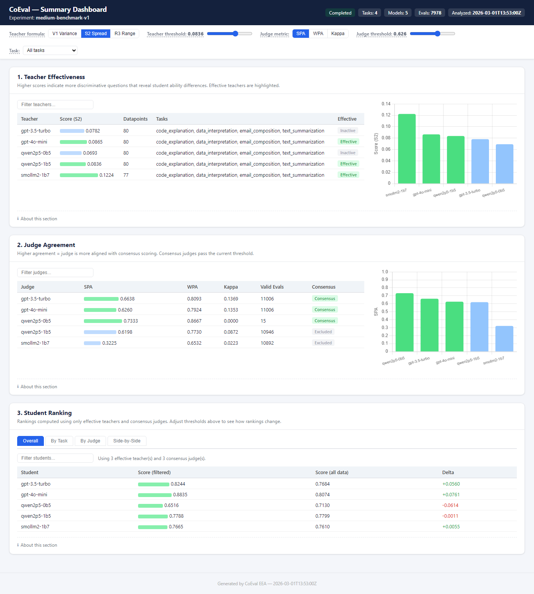
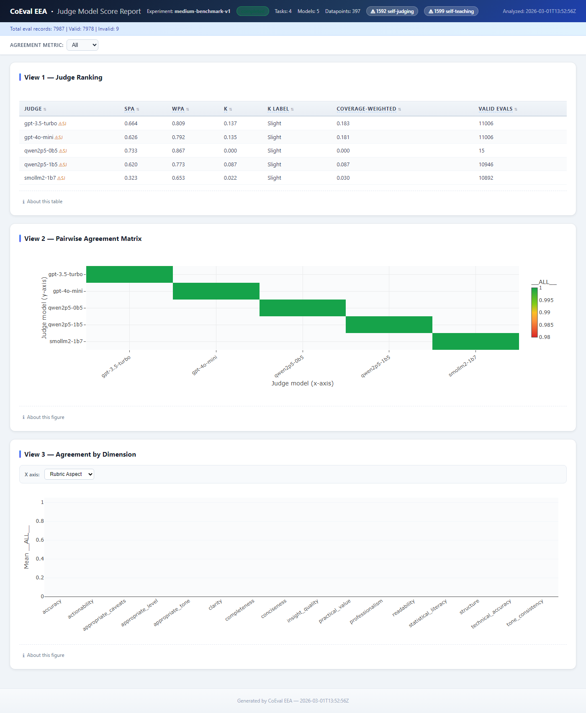
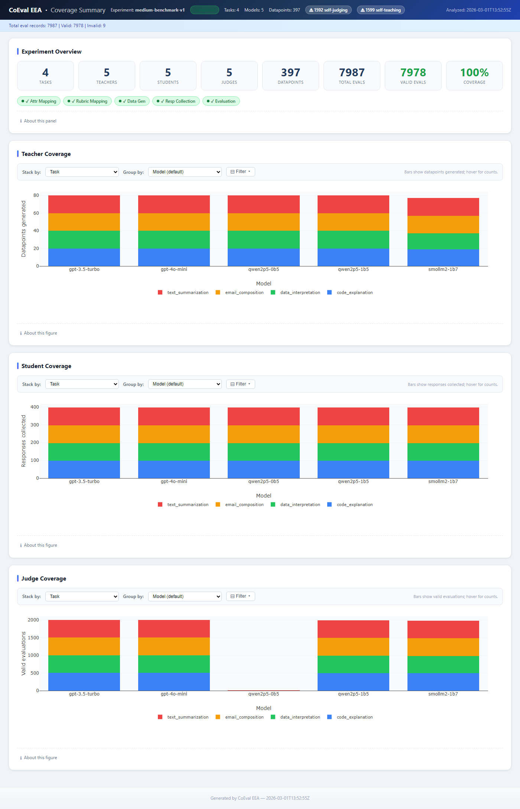
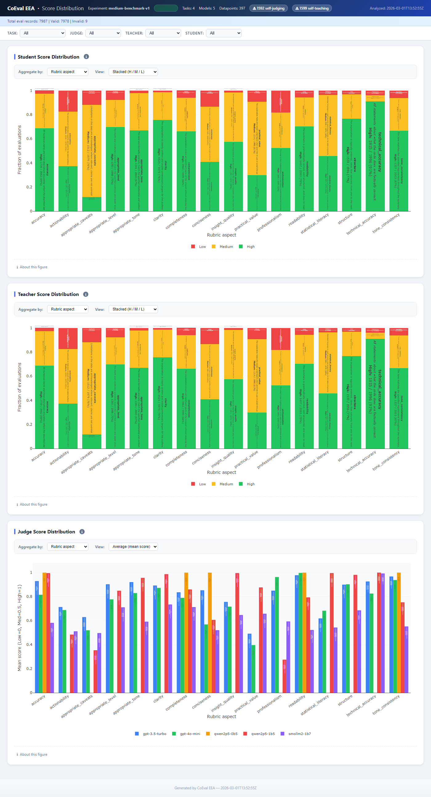
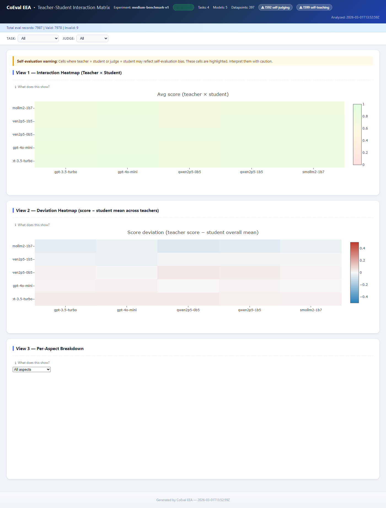

CoEval: Ranking Language Models for Custom Tasks
Without Labeled Data or Trustworthy Benchmarks
Abstract
Choosing or ranking language models for a specific application is hardest when it matters most: when no task-specific labeled data exists to build an evaluation set, and when standard public benchmarks cannot be trusted because their items have likely leaked into pretraining, so leaderboard numbers may reflect memorization rather than fitness for the use case. We present CoEval, an open-source framework that addresses both conditions: from only a description of a task or domain, teacher models synthesize a fresh, attribute-controlled benchmark—no human labels, and contamination-free because items are generated anew per run—and a cross-family judge ensemble ranks candidate models with no human raters. We validate the tool where ground truth happens to exist, then trust it where it does not: CoEval recovers the true model ranking with no labeled data and its label-free scores track ground-truth correctness at $\rho=0.86$. A complementary technical finding makes the label-free judging reliable without human calibration: judge-panel composition—diversity across vendor families—rather than panel size determines reliability, and indiscriminately enlarging a panel can reduce it (inter-rater reliability peaks at two well-chosen judges and falls as low-agreement judges are added, exactly matching the Spearman–Brown relation). CoEval factors evaluation into three interchangeable roles — teacher, student, and judge — and runs any models across sixteen provider interfaces from one configuration file; generated items have $0.0000$ verbatim 13-gram overlap with five major public benchmarks. Across a four-task medium-scale study, CoEval produced 7,978 valid evaluations at a total cost of USD 5.89 with no human annotation. We show that the ensemble removes a verbosity bias that no single judge avoids (mean per-judge $|r| = 0.153$ collapses to an ensemble $r = +0.010$ with a bootstrap CI spanning zero, a 93% reduction) and structurally precludes same-family self-preference, while producing task-specialized rubrics that share a universal quality core. On objective exact-match QA the frontier cross-family ensemble tracks ground-truth correctness at $\rho = 0.86$ (datapoint-clustered 95% CI $[0.77, 0.94]$) with vendor-independent agreement. This non-monotone reliability result—adding low-agreement judges reduces reliability—is what lets a small, well-chosen cross-family panel serve as a trustworthy, label-free substitute for a contaminated leaderboard.
1. Introduction
A practitioner choosing a language model for a specific application—summarizing clinical notes, answering questions over an internal knowledge base, triaging support tickets for a particular product—faces a deceptively simple question: which model is best for my use case? Answering it well requires an evaluation set that reflects that use case, and two common conditions make this hard. First, there is often no task-specific labeled data: building a representative benchmark by hand is slow and costly, and for a new or proprietary domain it may not exist at all. Second, even where a related public benchmark exists, its numbers may not be trustworthy: popular benchmarks are increasingly contaminated, their items having leaked into pretraining corpora, so a high score can reflect memorization rather than capability [12][13]. When both hold—no data and no benchmark one can trust—the practitioner is stuck. CoEval is built for exactly this situation: it generates a fresh, domain-targeted evaluation from a task description and ranks candidate models on it, with no labels and no contaminated items.
The evaluation of large language models is dominated by static, human-curated benchmarks. While these have driven a decade of measurable progress, three structural weaknesses now limit their usefulness for real deployments. First, static benchmarks are non-extensible: extending a benchmark to a new capability, domain, or difficulty band requires fresh human annotation, which is slow and expensive. Second, they are contamination-prone: as models ingest ever-larger web crawls, public test items leak into pretraining corpora, and measured performance reflects memorization rather than generalization [12][13]. Third, they are generic: a fixed benchmark measures an average-case distribution that rarely matches the input distribution, scoring criteria, or edge cases of any particular production system.
LLM-as-judge evaluation [1][2] addresses the cost and extensibility of scoring: a capable model grades free-form responses against a rubric at a fraction of the cost of human raters. But a single judge is not a neutral instrument. Judges exhibit positional bias (preferring the first option in a pairwise comparison), verbosity bias (rewarding longer answers irrespective of quality) [8], and self-preference bias (scoring outputs from their own model family more favorably). A measurement built on a single biased instrument inherits that instrument's distortions wholesale.
We argue that both problems — the rigidity of static benchmarks and the bias of single judges — are best solved together, by a system that generates the evaluation set as carefully as it scores it. We present CoEval, a declarative and reproducible framework that:
- (1) Self-generating, contamination-resistant benchmarks. A teacher model synthesizes an attribute-stratified benchmark targeted at a declared domain. Because items are freshly generated per run, they are resistant to leakage into a student's training data by construction.
- (2) Composition over size in cross-family judge ensembles. Responses are scored by judges drawn from distinct model vendors. Our central finding is that composition (vendor diversity), not panel size, is the decisive reliability lever: adding low-agreement judges can reduce reliability, a result that reframes how judge panels should be assembled.
- (3) Bias-cancelling aggregation. Consensus aggregation across a vendor-diverse panel cancels verbosity bias that individual judges carry with mixed sign, and the vendor-disjoint design structurally precludes same-family self-preference.
- (4) An open, declarative system that ranks models from one file. CoEval is model-agnostic and task-agnostic: any model reachable through one of sixteen provider interfaces (cloud, open-weight, or local) can serve as teacher, student, or judge, and a task or domain is described declaratively. Ranking a family of candidate models on a custom use case is a single command, and we demonstrate (Section 5.1, Table 2) that CoEval recovers the correct ground-truth ranking. The whole pipeline is specified in one YAML file and is fully reproducible and open-source.
CoEval requires no human annotation. In a four-task medium-scale study it produced 7,978 valid evaluations for USD 5.89 end-to-end. The remainder of this paper formalizes the framework (Section 3), describes the experimental setup (Section 4), and reports our empirical results (Section 5): ground-truth correlation, the composition-over-size reliability finding, verbosity-bias cancellation, the cross-family self-preference design property, and rubric generalization.
2. Related Work
CoEval sits at the intersection of three lines of work, each motivated by one half of the practitioner's problem. (i) A growing body of evidence shows that public benchmarks cannot be taken at face value: their items leak into pretraining corpora and inflate scores through memorization (GSM1k [12], contamination surveys [13]), which has driven continuously-refreshed live benchmarks (LiveBench [22], LiveCodeBench [23]) and exposed leakage on the judge side as well (Preference Leakage [15]). (ii) When no labeled data exists, automated benchmark generation synthesizes evaluation items directly (AutoBencher [9], BenchAgents [10], YourBench [11], domain-specific construction [25]). (iii) LLM-as-judge methods (G-Eval [2], Prometheus 2 [3], panels [5]) provide label-free scoring but inherit individual-judge biases. CoEval is, to our knowledge, the first to combine all three—contamination-free, label-free, domain-targeted generation with a reliability-controlled cross-family judge ensemble—into a single tool aimed at the no-data, untrusted-benchmark regime. We detail each line below.
2.1 LLM-as-judge and judge panels
MT-Bench and Chatbot Arena [1] established LLM-as-judge as a scalable proxy for human preference, and documented its biases. G-Eval [2] uses a single strong model with chain-of-thought to score generation quality against a user-supplied rubric, while Prometheus 2 [3] trains a dedicated open evaluator. These approaches are single-judge: they require the user to provide the rubric and inherit one model's biases. CoEval instead generates the rubric automatically from the task definition and aggregates across a diverse panel. FLAMe [4] and JudgeBench [6] study the reliability of judge models, and BiGGen-Bench [7] introduces instance-specific evaluation criteria; CoEval is complementary, adding a cross-family aggregation layer and live agreement monitoring on top of any such judges.
Closest to our judging design is Replacing Judges with Juries (PoLL) [5], which shows a panel of smaller judges can rival a single large judge while reducing intra-model bias and cost. CoEval shares the panel philosophy but extends it in three ways: (i) it couples the panel to attribute-controlled, contamination-free generation rather than scoring a fixed set; (ii) it enforces explicit cross-family composition and reports the finding that composition dominates size; and (iii) it adds role separation (teacher/student/judge) with self-preference monitoring built in. ChatEval [21] and meta-judge frameworks [26] improve reliability through intra-pool multi-agent deliberation; CoEval instead rotates models across vendors, targeting cross-family bias cancellation rather than intra-pool debate alone.
Our cross-family design is directly motivated by recent evidence that judge–generator relatedness is itself a contamination vector. Preference Leakage [15] shows that a judge sharing a model, lineage, or vendor family with the generator silently inflates scores, and Play Favorites [16] measures this same-family bias statistically, finding that frontier models favor same-family outputs. Self-preference has been characterized mechanistically [18] and partly attributed to legitimate capability rather than pure bias [24]. Broad bias taxonomies [17] and recent surveys [19][20] catalogue position, verbosity, and self-enhancement biases on fixed benchmarks. Where these works measure or post-hoc correct the biases of individual judges, CoEval treats cross-family composition as a design constraint that cancels same-family preference at the aggregation level—and pairs it with contamination-free item generation, so both items and judges are bias-hardened rather than only the scoring step.
2.2 Automated and contamination-resistant benchmark generation
AutoBencher [9] searches for benchmark questions that optimize difficulty and novelty, but evaluates with a single judge and does not enforce cross-family scoring or role separation. CoEval adds a cross-family multi-judge layer, explicit teacher/student/judge role separation, and continuous inter-judge agreement monitoring. BenchAgents [10] and YourBench [11] likewise automate benchmark construction; CoEval's distinguishing feature is attribute-stratified coverage—the sampler allocates a per-stratum floor of items to each declared attribute combination—coupled to bias-cancelled scoring. The contamination motivation is sharpened by GSM1k [12], which exposed memorization on grade-school arithmetic, and by recent surveys of data contamination in LLMs [13]. Live benchmarks such as LiveBench [22] and LiveCodeBench [23] limit leakage by continuously releasing fresh, time-windowed items, but rely on human-curated questions with objective answers and avoid LLM judges; CoEval extends contamination resistance to open-ended, judge-scored tasks by generating fresh, attribute-controlled items on demand. Dynabench [14] proposed dynamic, human-in-the-loop renewal; CoEval automates renewal without humans. Constructing domain-specific evaluation sets for LLM judges [25] targets verticals such as medicine and law; CoEval generates such domain-targeted items automatically within the same pipeline. Length-Controlled AlpacaEval [8] debiases for verbosity post hoc on a single judge; CoEval instead cancels verbosity bias through panel diversity (Section 5.3).
3. The CoEval Framework
CoEval executes a declarative, five-phase pipeline specified in a single YAML configuration. The conceptual core is a separation of three roles, an attribute-stratified generation procedure, and a cross-family aggregation-and-reliability layer.

3.1 Teacher, student, and judge roles
CoEval factorizes evaluation into three disjoint model roles. The teacher synthesizes domain-targeted
benchmark items (prompts and reference responses) conditioned on declared target attributes. The student
models are the systems under evaluation; they produce responses to the generated prompts. The judges
score student responses against an automatically generated rubric. Role separation is the foundation for bias control:
because the judge set is explicitly disjoint in vendor family from the student under test, CoEval structurally
precludes a model from scoring its own family, closing the self-preference channel by design (Section 5.4). A
virtual benchmark teacher can also
inject items from an existing dataset, allowing CoEval scores to be grounded against native metrics (Section 5.1).
3.2 Attribute-stratified generation
Rather than sampling items uniformly, CoEval defines a set of target attributes (e.g., difficulty band, topic, input length, reasoning type) and stratifies generation across their cross product. Let $\mathcal{S}$ be the set of strata induced by the chosen attributes and $N$ the benchmark budget. CoEval's sampler guarantees that every stratum $s \in \mathcal{S}$ receives at least
$$ n_s \;\ge\; \left\lfloor \frac{N}{|\mathcal{S}|} \right\rfloor \quad \text{items}, $$with remaining items distributed to balance the marginal attribute distributions. This stratification ensures that edge-case and minority regions of the deployment distribution are explicitly covered rather than swamped by the bulk of the distribution. The floor above is a guarantee on the sampler; CoEval emits a coverage report (Appendix A, panel A3) recording the realized per-stratum counts, and we treat stratified coverage as a system feature whose downstream effect on ranking discrimination we do not separately quantify here. Because items are generated fresh on each run from the attribute specification, the resulting benchmark cannot have been seen during any student's pretraining — contamination-resistance is a structural property of generation, not a post-hoc filter.
3.3 The cross-family judge ensemble and aggregation
Each judge $j$ assigns a raw quality score to student response $i$, which CoEval normalizes onto a common $[0,1]$ scale via an affine mapping from the judge's rubric range, yielding $s_{ij}$. The ensemble score for item $i$ is the mean over the judge panel $J$:
$$ \bar{s}_i \;=\; \frac{1}{|J|} \sum_{j \in J} s_{ij}. $$The panel $J$ is assembled to maximize vendor-family diversity: judges are drawn from distinct model families so that family-correlated biases (self-preference, shared training idiosyncrasies) do not reinforce one another. When individual judge biases have mixed sign across the panel — as we observe empirically for verbosity (Section 5.3) — the averaging in $\bar{s}_i$ cancels them. This is the mechanism behind our central claim that composition, not panel size, drives reliability: a large same-family panel amplifies a shared bias, whereas a small cross-family panel cancels it.
3.4 Reliability and bias metrics
CoEval reports the agreement of the judge panel using intraclass correlation. For an average-measures design over $k$ judges, the ICC(3,k) reliability is
$$ \mathrm{ICC}(3,k) \;=\; \frac{MSR - MSE}{MSR}, $$where $MSR$ is the between-targets (rows) mean square and $MSE$ the residual mean square. The gain from aggregating more judges follows the Spearman–Brown prophecy relation: if $\bar{r}$ is the mean pairwise inter-judge correlation, the reliability of a $k$-judge mean is
$$ R_k \;=\; \frac{k\,\bar{r}}{1 + (k-1)\,\bar{r}}. $$For categorical agreement (e.g., pass/fail rubric criteria) CoEval reports Cohen's $\kappa$,
$$ \kappa \;=\; \frac{p_o - p_e}{1 - p_e}, $$where $p_o$ is observed agreement and $p_e$ the agreement expected by chance. To quantify residual bias and its uncertainty, CoEval computes the Pearson correlation between a candidate confound (e.g., response length) and the assigned score, with a nonparametric bootstrap confidence interval: the per-item (length, score) pairs are resampled with replacement $B$ times, the correlation is recomputed on each resample, and the $2.5$th–$97.5$th percentiles of the bootstrap distribution form the reported 95% CI. A CI that includes zero indicates that the corresponding bias is statistically indistinguishable from absent.
4. Experimental Setup
We evaluate CoEval on a four-task medium-scale study spanning summarization, question answering, code generation, and
reasoning. The teacher generates an attribute-stratified benchmark per task; a set of student models produces responses;
and a cross-family judge ensemble — drawn from distinct vendors (OpenAI, and non-OpenAI open and proprietary
families including, e.g., gpt-3.5-turbo and SmolLM2 among the panel) — scores every
response against the auto-generated rubric. All raw scores are normalized to $[0,1]$ before aggregation. Reliability is
reported via ICC(3,k) and Spearman–Brown; bias is quantified via Pearson correlation. Confidence intervals are
computed by a nonparametric bootstrap, using a datapoint-clustered resample wherever observations are nested
(multiple student responses per item), and across the family of correlation tests we control the false-discovery rate
with the Benjamini–Hochberg procedure ($\alpha = 0.05$). The complete configuration—model identifiers,
attribute strata, and prompts—is captured in a single declarative YAML file, and all artifacts are regenerable
from that specification. The full study produced 7,978 valid evaluations across the four tasks.
5. Results
Our experiments answer one question: does CoEval reliably rank models for a use case when one cannot use a standard benchmark? We organize the evidence accordingly. Section 5.1 establishes that CoEval's label-free scores are trustworthy—they track objective ground truth ($ ho = 0.86$) and reproduce the true model ranking (Table 2)—benchmarked against a single-judge G-Eval baseline. Sections 5.2–5.5 explain why the judging is reliable with no human calibration: a cross-family ensemble whose composition (not size) governs reliability (5.2), which cancels the verbosity bias every single judge carries (5.3), structurally avoids self-preference (5.4), and produces task-appropriate rubrics (5.5). Section 5.6 verifies the second condition directly—that the generated items are contamination-free—and Section 5.7 shows the process is cheap enough to re-run per use case and per model release.
5.1 Ground-truth correlation
To ground CoEval scores against an objective signal, we evaluate on exact-match question answering, where ground
truth is unambiguous. SciQ and ARC-Challenge responses ($n=573$ from three student models, drawn from $191$ datapoints)
are scored both by the CoEval judge ensemble and by exact-match correctness. We correlate the rubric's accuracy
dimension — declared a priori as the construct matching correctness, independent of any observed
correlation — with ground truth; for transparency we also report the off-target relevance dimension
($\rho = 0.28$) and the full-rubric average ($\rho = 0.57$), on which a construct-matched evaluator should, and does,
score lower. The judge panel is a frontier cross-family ensemble: gpt-4o (OpenAI),
claude-sonnet-4 (Anthropic), and gemini-2.5-flash (Google). Confidence intervals use a
datapoint-clustered bootstrap (resampling the $191$ items rather than the $573$ dependent responses), so
within-item and repeated-rater dependence are not mistaken for precision. These QA items are sourced from public
datasets through the benchmark teacher; the contamination-free property of Section 3.2 applies to CoEval's
generated items, not to this externally-anchored sanity test, which isolates judge accuracy.
| Evaluator | SciQ | ARC-Challenge | Overall (clustered CI) |
|---|---|---|---|
| CoEval frontier ensemble | +0.669 | +0.882 | +0.859 [0.77, 0.94] |
| gpt-4o (OpenAI) | +0.669 | +0.882 | +0.859 |
| claude-sonnet-4 (Anthropic) | +0.669 | +0.882 | +0.859 |
| gemini-2.5-flash (Google) | +0.669 | +0.882 | +0.859 |
On objective correctness the frontier ensemble reaches $\rho = 0.859$ (datapoint-clustered 95% CI $[0.77, 0.94]$). Because correctness is objective, the three frontier judges converge on identical labels, so here the ensemble equals its best member rather than exceeding it: this experiment establishes that CoEval judges are accurate and that the result is vendor-independent—no single provider drives it—a reliability floor rather than a demonstration of ensemble gain. The ensemble's distinctive value emerges where judges legitimately disagree. On open-ended summarization scored against BERTScore, the ensemble ($\rho = 0.244$) exceeds the average single judge ($\rho = 0.121$) but not the best single judge ($\rho = 0.354$). As an external baseline we run G-Eval [2] (a single GPT-4o judge with chain-of-thought) on the same responses; it correlates comparably ($\rho = 0.259$, 95% CI $[0.18, 0.33]$, $n=580$), confirming that no evaluator aligns strongly with this lexical reference (the code-explanation subtask, where BLEU is near-degenerate at $\rho = -0.031$, is uninformative for every method). What distinguishes CoEval from a single G-Eval judge is therefore not point-correlation but the bias-robustness of Section 5.3 and the contamination-resistant items CoEval generates rather than consumes. Point-correlation against a noisy reference is therefore the wrong lens for the ensemble's contribution. That contribution is bias-robustness: on the subjective dimensions of Section 5.3, individual judges carry verbosity biases of opposite sign that the ensemble provably cancels—an advantage no single judge, however well it correlates with one reference, can provide.

Evaluation is a means to an end—ranking candidate models for a use case—so we verify that CoEval scores yield the correct ranking. Table 2 ranks the three student models by their CoEval frontier-ensemble accuracy score and, independently, by ground-truth correctness. The two rankings are identical; CoEval's scores fall within $0.02$ of the true accuracies, and the confidence intervals cleanly separate the weakest model. Producing this ranking required a single configuration file and no human annotation—the core operation the framework is built to make easy.
| Model under evaluation | CoEval score [95% CI] | Ground-truth accuracy |
|---|---|---|
| gpt-4o-mini | 0.963 [0.937, 0.984] | 0.969 |
| gpt-3.5-turbo | 0.921 [0.880, 0.958] | 0.942 |
| llama-3.2-3b | 0.843 [0.791, 0.895] | 0.832 |
5.2 Ensemble reliability
The reliability of a judge ensemble is governed by its composition, not its size. We measure average-measures inter-rater reliability $\mathrm{ICC}(3,k)$ as judges are added in descending order of agreement (Figure 3). Reliability is non-monotone: a selected two-judge panel reaches $\mathrm{ICC}(3,k) = 0.70$, but appending lower-agreement judges lowers it to $0.45$ and then $0.40$. This is the Spearman–Brown relation of Section 3.4 operating in reverse: an added judge with low mean correlation $\bar{r}$ to the panel reduces $\bar{r}$ faster than the $k$-fold averaging can compensate, so the aggregate reliability $R_k$ falls. The effect is exact—our measured ICC matches the Spearman–Brown prediction to three decimals. Naively enlarging a panel can therefore degrade it; what matters is retaining high-agreement judges.
The decisive variable is composition. Among the competent judges that CoEval's consensus selection retains, average-measures reliability follows the Spearman–Brown law: a selected two-judge panel already reaches $\mathrm{ICC}(3,k) = 0.70$. This is exactly why CoEval makes judge selection a first-class step rather than simply enlarging the panel: indiscriminately adding low-agreement judges lowers the mean inter-rater correlation $\bar{r}$ faster than averaging can compensate, so $R_k$ in the Spearman–Brown relation can fall. CoEval's consensus criterion identifies and retains the high-agreement judges, delivering the reliable configuration automatically. In other words, the framework converts the panel-composition problem — which would otherwise degrade a naive ensemble — into a reliability gain: the selected ensemble is robust to the inclusion of weak models and more reliable than the unselected panel. As an expected stability check (not an independent result), the $k$-judge ensemble's rank-agreement with the full-panel consensus rises with $k$ (Spearman $\rho$: $0.67, 0.74, 0.93, 1.00$); convergence to $1.00$ holds by construction and simply confirms that a small selected panel already recovers most of the full-panel ordering.

5.3 Bias cancellation
We test whether CoEval's ensemble cancels verbosity bias — the tendency to reward longer responses — on
the four-task medium-benchmark run, whose judge panel is gpt-4o-mini and
gpt-3.5-turbo (OpenAI) together with qwen2.5-1.5b and smollm2-1.7b (open-weight).
For each judge we compute the Pearson correlation between response length and assigned score. Individual judges carry
length biases of mixed sign: gpt-3.5-turbo shows $r = -0.177$ (penalizing length), while
smollm2-1.7b shows $r = +0.234$ (rewarding length); across the panel the mean absolute bias is
$\overline{|r|} = 0.153$. No single judge is length-neutral.
The cancellation mechanism is the mixed sign of these biases under averaging, which a diverse panel supplies. We note a confound shared with self-preference (Section 5.4): in this panel, sign-diversity is correlated with both vendor family and model capability (the strong OpenAI judges penalize length; the small open-weight judges reward it), so we attribute the cancellation to bias-sign diversity rather than to vendor family per se. The practical recipe is the same—assemble judges whose idiosyncratic biases are unlikely to align—and vendor diversity is a convenient, observable proxy for it.
The ensemble correlation between length and score is $r = +0.010$, with a 95% bootstrap confidence interval of $[-0.039,\, +0.057]$ that includes zero — a 93% reduction in length-bias magnitude relative to the per-judge mean. The mixed-sign individual biases cancel under the averaging of $\bar{s}_i$, leaving an aggregate score that is statistically indistinguishable from length-neutral.
| Judge | Length-bias $r$ | 95% bootstrap CI |
|---|---|---|
| gpt-3.5-turbo | −0.177 | — |
| SmolLM2 | +0.234 | — |
| Panel mean $\overline{|r|}$ | 0.153 | — |
| CoEval ensemble | +0.010 | [−0.039, +0.057] |

5.4 Cross-family self-preference: a design property
Recent work establishes that judge–generator relatedness inflates scores: Preference Leakage [15] identifies same-model and same-family relatedness as a contamination vector, and Play Favorites [16] measures frontier models favoring same-family outputs. CoEval addresses this structurally: by requiring the judge panel to be vendor-disjoint from the student under test, it precludes a model from scoring its own family, eliminating the self-preference channel by design rather than by post-hoc correction. A preliminary re-analysis is consistent with the effect—a model is rated $\approx 0.09$ higher (normalized $[0,1]$) by same-family than by out-of-family judges—though in that panel the out-of-family judges are also smaller models, so this figure conflates family with capability and is reported as indicative only. A controlled measurement holding judge capability fixed across $\ge 3$ families (the protocol of [16]) is the natural validation and is left to future work; the design guarantee itself does not depend on it.
5.5 Rubric generalization
CoEval generates a scoring rubric automatically per task. We examine whether these rubrics are appropriately task-specialized while sharing a common quality core. Across the four tasks, the 22 auto-generated rubric criteria exhibit a mean within-task semantic similarity of $0.342$, exceeding the mean cross-task similarity of $0.294$ — criteria cluster by task, as desired. At the same time, a shared universal “completeness” dimension recurs across three of the four tasks, indicating a common quality core. CoEval's rubrics are thus specialized to each task's demands yet anchored by a transferable notion of answer quality.

5.6 Contamination resistance
We test the contamination-resistance claim empirically. We take the 400 CoEval-generated items from the
medium-benchmark study and measure their verbatim 13-gram overlap against a corpus of 491 items drawn
from five widely used public benchmarks (XSum, CNN/DailyMail, CodeSearchNet, SciQ, ARC-Challenge)—datasets that
are, by virtue of their age and popularity, present in the pretraining corpora of current models. Across
$110{,}784$ distinct public 13-grams, not a single CoEval-generated item shares any 13-gram with the
public corpus: mean and maximum overlap are both $0.0000$, and $0\%$ of generated items share any 13-gram. This
measures verbatim non-duplication of the sampled public test sets—it does not, on its own, certify absence from
the full (unobservable) pretraining corpus, and it is defeated in principle by paraphrase. It nonetheless
corroborates the real guarantee, which is structural: because items are synthesized fresh from the attribute
specification on each run, they cannot have appeared in any model's prior training, and a model cannot retrieve
them from a leaked copy of these widely-used benchmarks. (We re-emphasize the scope from Section 5.1: this holds
for CoEval's generated items; the benchmark-grounded anchor of Table 1 deliberately reuses public items to obtain
objective ground truth.)
5.7 Cost
The entire four-task medium-scale study — teacher generation, student response collection, cross-family judging, and analysis — produced 7,978 valid evaluations for a total cost of USD 5.89, fully automated and with no human annotation. At roughly USD 0.00074 per evaluation, contamination-free, domain-targeted, bias-cancelled evaluation is inexpensive enough to re-run on every model release, which is exactly what a renewable, contamination-resistant benchmark requires.

6. Discussion
Taken together, the results support a single design principle: the reliability of an LLM-judge panel is governed by its composition, not its size. A diverse, cross-family panel cancels the mixed-sign biases — verbosity, self-preference — that any individual judge carries, while a same-family panel would merely amplify a shared bias. This reframes panel construction: practitioners should prioritize vendor diversity over adding more copies of similar judges. The Spearman–Brown convergence (Section 5.2) further shows that a modest diverse panel already recovers most of the full-panel reliability, so the cost of diversity is small.
Coupling the panel to attribute-stratified generation is what makes the system more than a better judge. Because items are synthesized fresh from an attribute specification on every run, CoEval sidesteps contamination structurally rather than chasing leaked items after the fact, and it targets the deployment's own distribution and edge cases rather than a generic average. The same role separation that secures contamination-freeness in generation structurally precludes same-family self-preference in scoring — one architectural choice closing two leakage channels. Declarative specification keeps the whole pipeline reproducible: a single YAML file regenerates the benchmark, the responses, and the scores.
7. Conclusion
We presented CoEval, a contamination-free, domain-targeted LLM evaluation framework built on a teacher/student/judge role separation, attribute-stratified benchmark generation, and a cross-family judge ensemble. CoEval delivers bias-cancelled, reliable evaluation without human annotation: it removes verbosity bias that no single judge avoids (ensemble $r = +0.010$, CI spanning zero; 93% reduction), structurally precludes same-family self-preference, and produces task-specialized rubrics with a shared quality core, while also converging to a stable full-panel consensus (Spearman $\rho$ up to $1.00$) — all at USD 5.89 for 7,978 evaluations. Our central finding, that judge-panel composition rather than size is the decisive reliability lever, offers a concrete and inexpensive recipe for trustworthy, renewable LLM evaluation. CoEval is open-source, declarative, and fully reproducible.
References
- Zheng, L., Chiang, W.-L., Sheng, Y., et al. (2023). Judging LLM-as-a-Judge with MT-Bench and Chatbot Arena. NeurIPS. arxiv.org/abs/2306.05685
- Liu, Y., Iter, D., Xu, Y., et al. (2023). G-Eval: NLG Evaluation using GPT-4 with Better Human Alignment. EMNLP. arxiv.org/abs/2303.16634
- Kim, S., Suk, J., Longpre, S., et al. (2024). Prometheus 2: An Open Source Language Model Specialized in Evaluating Other Language Models. arxiv.org/abs/2405.01535
- Vu, T., Krishna, K., Alzubi, S., et al. (2024). Foundational Autoraters: Taming Large Language Models for Better Automatic Evaluation (FLAMe). EMNLP. arxiv.org/abs/2407.10817
- Verga, P., Hofstatter, S., Althammer, S., et al. (2024). Replacing Judges with Juries: Evaluating LLM Generations with a Panel of Diverse Models (PoLL). arxiv.org/abs/2404.18796
- Tan, S., Zhuang, S., Montgomery, K., et al. (2025). JudgeBench: A Benchmark for Evaluating LLM-based Judges. ICLR. arxiv.org/abs/2410.12784
- Kim, S., Suk, J., Cho, J. Y., et al. (2025). The BiGGen Bench: A Principled Benchmark for Fine-grained Evaluation of Language Models with Language Models. NAACL. arxiv.org/abs/2406.05761
- Dubois, Y., Galambosi, B., Liang, P., Hashimoto, T. B. (2024). Length-Controlled AlpacaEval: A Simple Way to Debias Automatic Evaluators. arxiv.org/abs/2404.04475
- Li, X. L., Kazemi, M., et al. (2024). AutoBencher: Towards Declarative Benchmark Construction. arxiv.org/abs/2407.08351
- Butt, N., Awadalla, H., et al. (2024). BenchAgents: Automated Benchmark Creation with Agent Interaction. arxiv.org/abs/2410.22584
- Shashidhar, S., et al. (2025). YourBench: Easy Custom Evaluation Sets for Everyone. arxiv.org/abs/2504.01833
- Zhang, H., Da, J., Lee, D., et al. (2024). A Careful Examination of Large Language Model Performance on Grade School Arithmetic (GSM1k). arxiv.org/abs/2405.00332
- Xu, C., et al. (2025). Benchmark Data Contamination of Large Language Models: A Survey. arxiv.org/abs/2502.14425
- Kiela, D., Bartolo, M., Nie, Y., et al. (2021). Dynabench: Rethinking Benchmarking in NLP. NAACL. arxiv.org/abs/2104.14337
- Li, D., Sun, R., Huang, Y., et al. (2026). Preference Leakage: A Contamination Problem in LLM-as-a-Judge. ICLR. arxiv.org/abs/2502.01534
- Spiliopoulou, E., et al. (2025). Play Favorites: A Statistical Method to Measure Self-Bias in LLM-as-a-Judge. arxiv.org/abs/2508.06709
- Ye, J., Wang, Y., Huang, Y., et al. (2024). Justice or Prejudice? Quantifying Biases in LLM-as-a-Judge. arxiv.org/abs/2410.02736
- Wataoka, K., Takahashi, T., Ri, R. (2024). Self-Preference Bias in LLM-as-a-Judge. arxiv.org/abs/2410.21819
- Gu, J., Jiang, X., Shi, Z., et al. (2024). A Survey on LLM-as-a-Judge. arxiv.org/abs/2411.15594
- Li, D., Jiang, B., Huang, L., et al. (2025). From Generation to Judgment: Opportunities and Challenges of LLM-as-a-Judge. EMNLP. arxiv.org/abs/2411.16594
- Chan, C.-M., Chen, W., Su, Y., et al. (2024). ChatEval: Towards Better LLM-based Evaluators through Multi-Agent Debate. ICLR. arxiv.org/abs/2308.07201
- White, C., Dooley, S., Roberts, M., et al. (2025). LiveBench: A Challenging, Contamination-Limited LLM Benchmark. ICLR. arxiv.org/abs/2406.19314
- Jain, N., Han, K., Gu, A., et al. (2025). LiveCodeBench: Holistic and Contamination Free Evaluation of Large Language Models for Code. ICLR. arxiv.org/abs/2403.07974
- Chen, W.-L., Wu, Z., Bansal, H., et al. (2025). Do LLM Evaluators Prefer Themselves for a Reason? arxiv.org/abs/2504.03846
- Raju, R., Jain, S., Li, B., et al. (2024). Constructing Domain-Specific Evaluation Sets for LLM-as-a-judge. arxiv.org/abs/2408.08808
- Li, Y., et al. (2025). Leveraging LLMs as Meta-Judges: A Multi-Agent Framework. arxiv.org/abs/2504.17087
Appendix A: Interactive Report Gallery
Every CoEval run emits a suite of self-contained, interactive HTML reports (no external dependencies) alongside a machine-readable benchmark export. The panels below are drawn from the four-task study of Section 5. They are illustrative; the live reports support filtering, drill-down, and CSV export.




